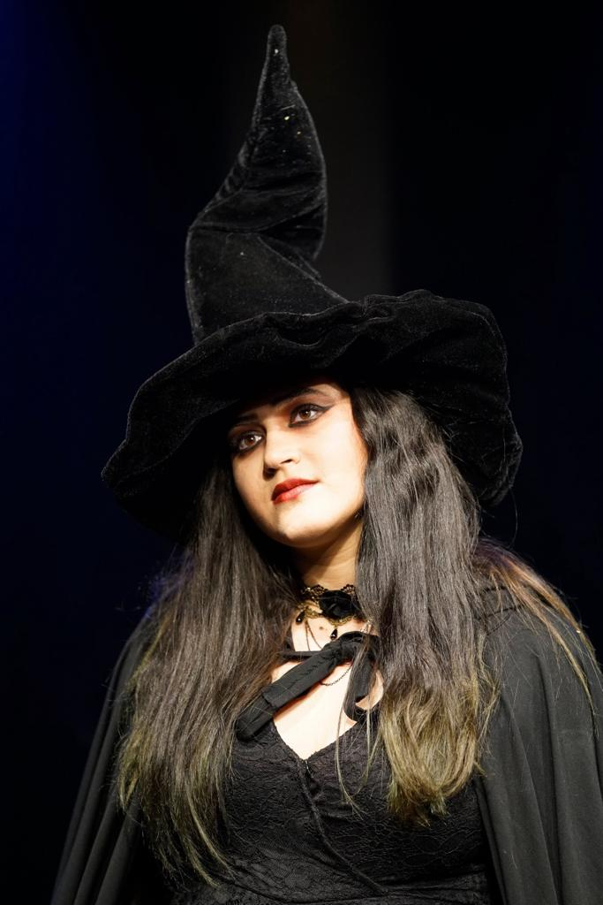
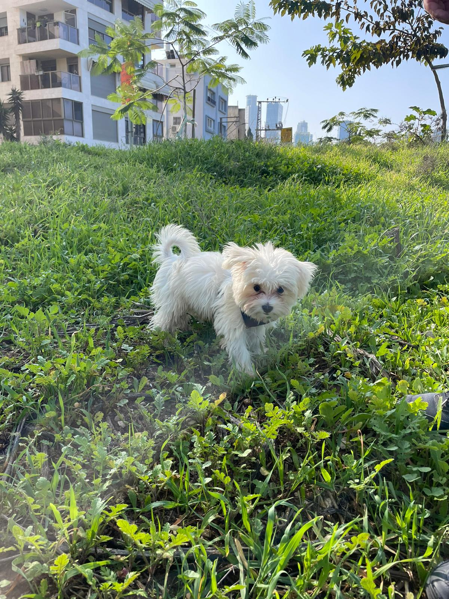
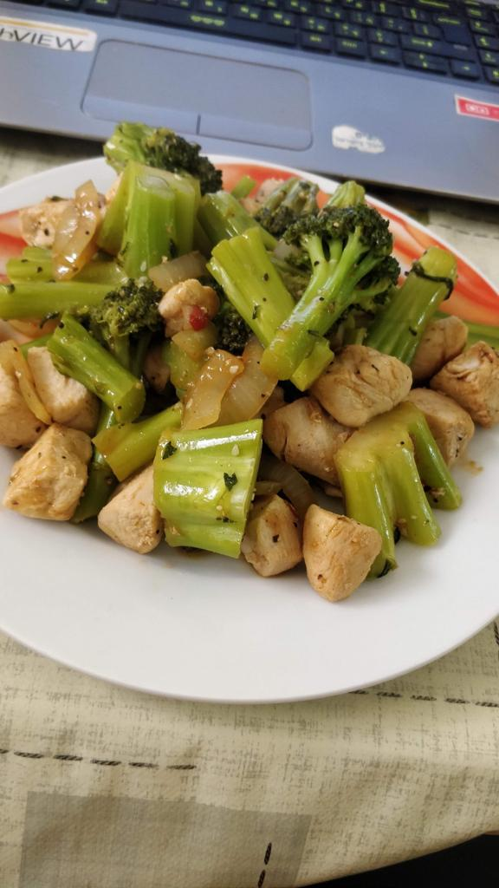

I really like acting and theater, from a young age I loved doing plays and pretending to be another character.
In high school, I auditioned for a youth group at Yoram Levinstein's acting studio, I was accepted and went through a
serious of learning process there, and finally we put on an original show called "The Witch" with me as the main charachter.

Two months ago we adopted Pistachio the little puppy. She is 4 months old and I love her very much, I like to go out to
play with her and throw hoops at her in Yarkon Park. Every time I come home from school she wags her tail and she is very
happy to see me and I her.

In Covid-19 time, everyone was in lockdown, so I had a lot of spare time, and I started learning how to cook.
I was reading recepies and making them.
I like to cook and bake. Dealing with it relaxes me a lot and it's fun to see that people like what I cook.
I mostly like to prepare Asian food.